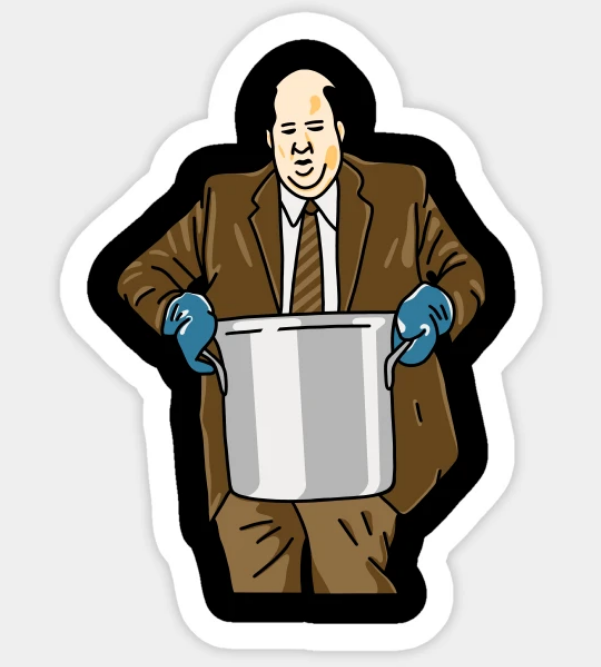
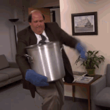

Kevin's Famous Chilli

Description
Have you ever wanted to taste Kevin Malone's famous chilli from the Office? Well now you can!
(The secret is to undercook the onions) Although there's a lot more to it than just that
Anyway, why waste time say lot word when few word do trick? Let's get into it
Number of servings: 6
Prep Time: 30 Minutes
Cook Time: 3 Hours
Total Time: 3 Hours 30 Minutes
Ingredients
- 32 oz 96% lean ground beef
- 2 tsp paprika
- 2 tsp cumin
- 1 tbsp cocoa powder
- 1 tbsp thyme
- 2 tbsp brown sugar
- ¼ cup corn meal
- 2 dried ancho chillies
- 2 tbsp olive oil
- 1 cup onion, chopped
- 1 Anaheim (or poblano) pepper, chopped
- 2 jalapenos, chopped
- 16 oz kidney beans, drained and rinsed
- 14 oz creamed corn
- 1 tbsp garlic, minced
- 1 tsp sea salt
- 1 tsp pepper
- 1 cup tomato, chopped
- 24 oz lager or light beer
- Cheese, for topping
- Plain Greek yogurt or sour cream, for topping
- Green onions, chopped for topping
Let's get cooking!

Step 1: Create the Seasoning!
- In a food processor pulse together the paprika, cumin, cocoa powder,
thyme, brown sugar, corn meal and dried ancho chillies.
- Combine until powdered.
Step 2: Time for the Onions and Peppers!
- In a large pot over medium high heat, add the olive oil and heat until simmery.
- Add the onions and lightly saute until the onions are 'sweating'
but not browning - about 2-3 minutes.
- Then add the Anaheim and jalapeno peppers.
- Continue to stir for another 2-3 minutes until the peppers are starting to soften.
Step 3: Now for the beans and the extra flavours!
- Stir in the Kidney beans, creamed corn, minced garlic, and tomato.
- Season with salt and pepper to taste.
Step 4: Drunken beef time!
- Pour in the lagers and bring to a light simmer.
- Then add the raw ground beef and use a spoon to break up the beef
and stir it into the liquid.
- Bring to a rolling simmer then cover
Step 5: Now the relaxing part
- Reduce the heat to medium-low and continue to simmer for at least
one hour or up to 6 hours, stirring occasionally.
The longer, the better the flavours
- ALTERNATIVELY: Carefully transfer the chilli to a crock pot and slow cook for 6-8 hours.
Step 6: Enjoy!
Serve the Chilli hot with your favourite toppings such as plain greek yogurt,
cheese, green onions, or whatever you like!
Congrats! You now know how to make Kevin Malone's famous chilli!
